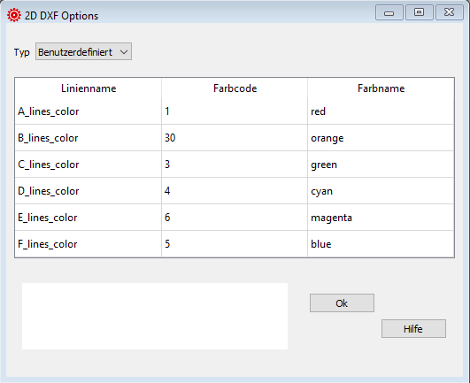

2D DXF Optionen¶
Hier definierst Du die Farben der Linien in den DXF Zeichnungen.
{kind=link}
Rohdaten:
*******************************************************
* 24. GENERAL 2D DXF OPTIONS
*******************************************************
1
A_lines_color 1 red
B_lines_color 30 orange
C_lines_color 3 green
D_lines_color 4 cyan
E_lines_color 6 magenta
F_lines_color 5 blue
Type¶
2D DXF Optionen ist eine optionale Konfiguration.
Wenn Du diese Werte nicht speziell definieren willst, dann setze Typ auf Standard.
Linienname¶
Die Namen sind fix definiert und müssen genau so eingegeben werden.
A_lines_color
B_lines_color
C_lines_color
D_lines_color
E_lines_color
F_lines_color
Farbcode¶
Standard Farbnummer für CAD Systeme: 1=rot, 2=gelb, 3=grün, 4=cyan, 5=blau, 6=magenta, 7=weiss, 8=dunkelgrau, 9= grau,… bis 255
Es wird empfohlen nur 2-stellige Farbnummern zu verwenden.
Farbname¶
Deine eigene Beschreibung der gewählten Farbe.
Eine detaillierte Beschreibung in englisch findest Du auf der Laboratori d'envol website.